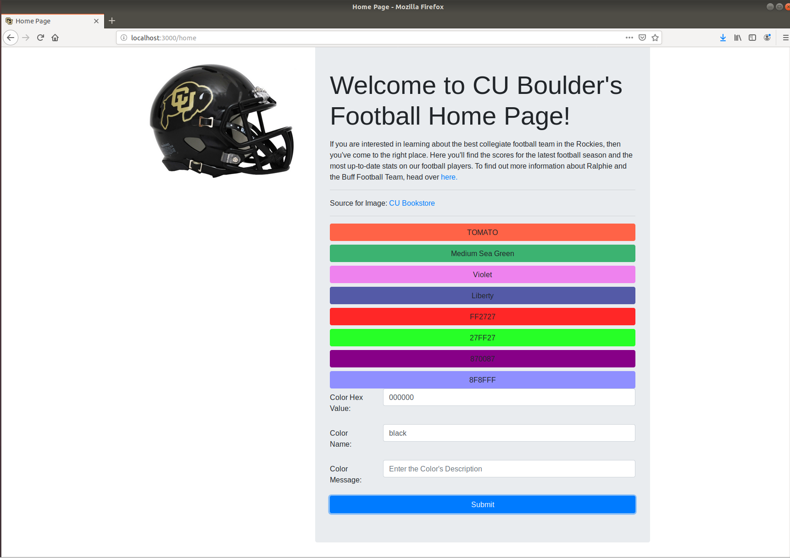

Lab 7 Node.JS
In this lab, we will integrate all of the components that we have learned in this course so far. We will create a backend server and connect it to our database. We will also connect our backend server to our front-end or client-side webpages. You will edit the extended template (below) which includes all of the files necessary to work with Node.
To receive credit for this lab, you MUST complete steps 1 to 3 in recitation and get marked off by your TA. You MUST complete step 4 and 5 (either in recitation or on your own) and upload "lab_7_link.txt" to Canvas by the deadline.
It is highly recommended that you work with a partner on this lab -- it's a long one. Make sure to include your partners name at the top of "lab_7_link.txt".
| Est. Time ⏱ |
|---|
| 0 minutes |
This lab is due right before recitation next week. For Example, If your lab is on this Friday at 10 AM, the submission deadline will be next Friday at 10 AM. There is no late policy for labs.
Download the extended template and make sure you extract the files before using them.
Resources
Beginning Node.js is your step-by-step guide to learning all the aspects of creating maintainable Node.js applications. You will see how Node.js is focused on creating high-performing, highly-scalable websites, and how easy it is to get started. Many front-end devs regularly work with HTML, CSS, PHP, even WordPress, but haven't yet got started with Node.js. This book explains everything for you from a beginner level, enabling you to start using Node.js in your projects right away.
Link: CU Boulder Library LinkCheck out TutorialsPoints resources on working with Node.js
Link: Tutorial PageTo learn from the official resources, checkout Node.js official documentation & the official documentation for EJS
Node.js Documentation | EJS Documentaiton1. Walkthrough
(15 Minutes)
The lab files have been modified to now work with "partials" and include statements. Since we are now working with a server-side application, we can have our server simplify some of our code and compile the html files for us! The views folder has now been updated into two seperate folders: partials & pages
- PARTIALS
- A partial is a small piece of a webpage's html, meaning it is not a complete webpage that could be rendered by a browser. Instead we create re-usable components of our webpage, which can make it easier to maintain our website's code. Think of this as being similiar to why we use an external css file. Updating this one css file can affect our entire website, without having to work with each individual page. We have create three partials for our site:
- header
- The header contains all of the code that was originally placed in the top of our html webpage. This included our css references, our meta-data, and the title for our webpage.
<!doctype html> <html lang="en"> <head> <meta charset="utf-8"> <meta name="viewport" content="width=device-width, initial-scale=1, shrink-to-fit=no"> <meta name="description" content=""> <title><% my_title %></title> <link rel='icon' href='../resources/img/favicon.ico' type='image/x-icon'/> <link rel="stylesheet" href="https://stackpath.bootstrapcdn.com/bootstrap/4.2.1/css/bootstrap.min.css" integrity="sha384-GJzZqFGwb1QTTN6wy59ffF1BuGJpLSa9DkKMp0DgiMDm4iYMj70gZWKYbI706tWS" crossorigin="anonymous"> <% if(typeof local_css == 'string' && local_css){ %> <link href="../resources/css/<%=local_css%>" rel="stylesheet"> <% } %> <link href="../resources/css/my_style.css" rel="stylesheet"> </head> <body> - menu
- The menu partial covers our navigation bar. This will handle all of our webpage links (which will now work via routes instead of relative addresses) to make it much easier to add additional webpages to our site.
<nav class="navbar navbar-expand-lg navbar-dark bg-dark"> <a class="navbar-brand" href="home.html"> <img class="rounded-circle" src="../resources/img/cu_boulder_logo.jpg" alt="" width="30" height="30"> </a> <button class="navbar-toggler" type="button" data-toggle="collapse" data-target="#navbarText" aria-controls="navbarText" aria-expanded="false" aria-label="Toggle navigation"> <span class="navbar-toggler-icon"></span> </button> <div class="collapse navbar-collapse" id="navbarText"> <ul class="navbar-nav mr-auto"> <li class="nav-item"> <a class="nav-link" href="/home">Home</a> </li> <li class="nav-item"> <a class="nav-link" href="/team_stats">Season Stats</a> </li> <li class="nav-item"> <a class="nav-link" href="/player_info">Player Information</a> </li> </ul> <div class="form-inline my-2 my-lg-0"> <button class="btn btn-outline-light my-2 my-sm-0" type="submit">Logout</button> </div> </div> </nav> - footer
- The footer partial includes all of our javascript files & the closing code for our webpage's html
<script src="https://code.jquery.com/jquery-3.3.1.slim.min.js" integrity="sha384-q8i/X+965DzO0rT7abK41JStQIAqVgRVzpbzo5smXKp4YfRvH+8abtTE1Pi6jizo" crossorigin="anonymous"></script> <script src="https://cdnjs.cloudflare.com/ajax/libs/popper.js/1.14.6/umd/popper.min.js" integrity="sha384-wHAiFfRlMFy6i5SRaxvfOCifBUQy1xHdJ/yoi7FRNXMRBu5WHdZYu1hA6ZOblgut" crossorigin="anonymous"></script> <script src="https://stackpath.bootstrapcdn.com/bootstrap/4.2.1/js/bootstrap.min.js" integrity="sha384-B0UglyR+jN6CkvvICOB2joaf5I4l3gm9GU6Hc1og6Ls7i6U/mkkaduKaBhlAXv9k" crossorigin="anonymous"></script> <script src="../resources/js/my_scripts.js"></script> </body> </html> - include statement
- To actual use our partial files, we need use an "include", which will copy the partial's code and paste it directly into the complete webpage. At the top and bottom of the views in out pages directory, you will see the following include statements:
<% include ../partials/header %> <% include ../partials/menu %> ...THE HTML CODE FOR YOUR WEBPAGE GOES HERE... <% include ../partials/footer %>
- PAGES
- The pages are the modified versions of our original html files, previously located in the "views" directory. We are going to now update our html files to use a new format called Embedded Javascript or EJS (file extensions are now .ejs). EJS will include html code and Server-Side javascript code. The files in our pages folder are as follows:
- login.ejs
- You can ignore this file. We won't be dealing with user login credentials for this lab
- registration.ejs
- You can ignore this file. We won't worry about handling user registration / user account creation for this lab
- home.ejs
- The home page will now be updated to work with a new table (favorite_colors) to help store all of the different color options we would like to use for our page's background-color. The home page will no longer be using client-side javascript methods for changing the color. Instead we will update our home page to use get/post requests to decide which color to use.
- team_stats.ejs
- The Footbal Season Stats page has now been updated to fill in information for all of our football games via queries to our football_games database table.
- player_info.ejs
- The Football Player Information Page will no longer use a client-side javascript array to populate our dropdown menu nor to fill in the individual player names. Instead we will use a get request to choose which player's information will be displayed.
More information
2. Updates to PostgreSQL Database
(5 Minutes)
We have a few updates to make to our PostgreSQL database so that it can work with today's lab. Specifically, we'll need to add a password to our database, update the football_players data to know include image url's, and add a new table "favorite_colors" which will be used on our home page.
- 1. Switch to the postgres user account
-
During the installation process PostgreSQL created a new user account named postgres. You'll be using this user account for most of your database interactions.
sudo -u postgres psql - 2. Create a password
-
The node.js server will later on be setup to directly access our postgres database. But in order to do that, our database has to have a password for our database connection tools. Make sure you enter a password that you can remember!
\password - 3. Switch to the football_db database
-
\c football_db; - 4. Update our tables
- Copy the following code into psql terminal to create the football_player, footbal_games, and favorite_colors tables and populate them with data. If you are having problems with your PostgreSQL installation, MAKE SURE TO DO THIS LAB WITH A PARTNER
DROP TABLE football_games; CREATE TABLE IF NOT EXISTS football_games ( visitor_name VARCHAR(30), /* Name of the visiting team */ home_score SMALLINT NOT NULL, /* Final score of the game for the Buffs */ visitor_score SMALLINT NOT NULL,/* Final score of the game for the visiting team */ game_date DATE NOT NULL, /* Date of the game */ players INT[] NOT NULL, /* This array consists of the football player ids (basically a foreign key to the football_player.id) */ PRIMARY KEY(visitor_name, game_date) /* A game's unique primary key consists of the visitor_name & the game date (this assumes you can't have multiple games against the same team in a single day) */ ); DROP TABLE football_players; CREATE TABLE IF NOT EXISTS football_players( id SERIAL PRIMARY KEY, /* Unique identifier for each player (it's possible multiple players have the same name/similiar information) */ name VARCHAR(50) NOT NULL, /* The player's first & last name */ year VARCHAR(3), /* FSH - Freshman, SPH - Sophomore, JNR - Junior, SNR - Senior */ major VARCHAR(4), /* The unique 4 character code used by CU Boulder to identify student majors (ex. CSCI, ATLS) */ passing_yards SMALLINT, /* The number of passing yards in the players entire football career */ rushing_yards SMALLINT, /* The number of rushing yards in the players entire football career */ receiving_yards SMALLINT, /* The number of receiving yards in the players entire football career*/ img_src VARCHAR(200) /* This is a file path (absolute or relative), that locates the player's profile image */ ); INSERT INTO football_games(visitor_name, home_score, visitor_score, game_date, players) VALUES('Colorado State', 45, 13, '20180831', ARRAY [1,2,3,4,5]), ('Nebraska', 33, 28, '20180908', ARRAY [2,3,4,5,6]), ('New Hampshire', 45, 14, '20180915', ARRAY [3,4,5,6,7]), ('UCLA', 38, 16, '20180928', ARRAY [4,5,6,7,8]), ('Arizona State', 28, 21, '20181006', ARRAY [5,6,7,8,9]), ('Southern California', 20, 31, '20181013', ARRAY [6,7,8,9,10]), ('Washington', 13, 27, '20181020', ARRAY [7,8,9,10,1]), ('Oregon State', 34, 41, '20181027', ARRAY [8,9,10,1,2]), ('Arizona', 34, 42, '20181102', ARRAY [9,10,1,2,3]), ('Washington State', 7, 31, '20181110', ARRAY [10,1,2,3,4]), ('Utah', 7, 30, '20181117', ARRAY [1,2,3,4,5]), ('California', 21, 33, '20181124', ARRAY [2,3,4,5,6]) ; INSERT INTO football_players(name, year, major, passing_yards, rushing_yards, receiving_yards, img_src) VALUES('Cedric Vega', 'FSH', 'ARTS', 15, 25, 33, '../resources/img/player1.jpg'), ('Myron Walters', 'SPH', 'CSCI', 32, 43, 52, '../resources/img/player2.jpg'), ('Javier Washington', 'JNR', 'MATH', 1, 61, 45, '../resources/img/player3.jpg'), ('Wade Farmer', 'SNR', 'ARTS', 14, 55, 12, '../resources/img/player4.jpg'), ('Doyle Huff', 'FSH', 'CSCI', 23, 44, 92, '../resources/img/player5.jpg'), ('Melba Pope', 'SPH', 'MATH', 13, 22, 45, '../resources/img/player6.jpg'), ('Erick Graves', 'JNR', 'ARTS', 45, 78, 98, '../resources/img/player7.jpg' ), ('Charles Porter', 'SNR', 'CSCI', 92, 102, 125, '../resources/img/player8.jpg'), ('Rafael Boreous', 'JNR', 'MATH', 102, 111, 105, '../resources/img/player9.jpg'), ('Jared Castillo', 'SNR', 'ARTS', 112, 113, 114, '../resources/img/player10.jpg'); DROP TABLE favorite_colors; CREATE TABLE IF NOT EXISTS favorite_colors( hex_value VARCHAR(6) PRIMARY KEY, /* This is the hexvalue for the color, it assumes that the value DOES NOT # */ name VARCHAR(50), /* The html safe name for the color. This can be null */ color_msg TEXT NOT NULL /* A message describing the chosen color */ ); INSERT INTO favorite_colors(hex_value, name, color_msg) VALUES('FF6347', 'TOMATO', 'This color gets it name from the red fruit that at one time was considered poisonous!'), ('3CB371', 'Medium Sea Green', 'Not sure what the difference is between Small & Large Sea Green... but I guess this one is in between them.'), ('EE82EE','Violet', 'Roses are Red, Violets are blue...'), ('545AA7','Liberty', 'Not to be confused with the color of the Liberty Bell (which is indeed a copper color)'); INSERT INTO favorite_colors(hex_value, color_msg) VALUES('FF2727', 'An unnamed red color'), ('27FF27', 'An unnamed green color'), ('870087', 'An unnamed magenta color'), ('8F8FFF', 'An unnamed blue color'); - 5. Exit the psql terminal
-
\q - 6. Ensure our postgres service is running in the background
-
sudo -u postgres service postgresql start
3. Home Page
(40 Minutes)
Below you'll find a guided walkthrough for setting up our home page. This will include handling a get request, post request, accessing our favorite_colors table, and finaly working with ejs in our home.ejs. By following along, you'll learn all of the skills necessary to finish the remaining two webpages our site (team_stats.ejs & player_info.ejs)
- 1. Handling a Get Request
-
Let's start by adding a way for us to access our home page, via a GET request. Copy the following code into your server.js file (right after the login & registration pages' app.get())
More informationapp.get('/home', function(req, res) { res.render('pages/home',{ my_title:'Home Page', color: 'FF0000', color_msg: 'The Color Red' }); });
Start our Webserver
To load our home page, we will need to first start up our Node.js server. Copy the following command into your terminal (make sure you are in the same directory as your server.js file!)
node server.js (out)3000 is the magic port
View our Webpage
To view our homepage, go to localhost:3000/home. For this lab, our server will only be accessible locally, so we will use localhost for our ip-address. We'll follow this with our port number (3000) and the route we are taking "/home". Now you'll notice our background-color hasn't changed, nor is our message displayed. We'll need to update our home.ejs file to use the passed in variables.
- 2. Update Home.ejs
-
Open up the home.ejs file (inside views/pages) and you'll find a commented line called TODO: FIRST EJS UPDATE. Add the following code, which will now use our passed in variables!
More information<p> Color Message: <% if(color) {%> <%- color_msg %> <% var script_text = '<script>document.body.style.backgroundColor = "#' + color + '";</script>'; %> <%- script_text %> <% }%> </p>
Refresh Home Page
After you have updated a webpage (.ejs file), you can simply refresh your browser to view the changes. You only have to restart your server when you make changes to the server.js file
- 3. Handle a Database Request
-
Now we will work on handling a simple database request. Our goal here is to have our home page list a button for each color option in our favorite_colors table. Let's start by replacing our previous get request in our server.js file with the following code:
More informationapp.get('/home', function(req, res) { var query = 'select * from favorite_colors;'; db.any(query) .then(function (rows) { res.render('pages/home',{ my_title: "Home Page", data: rows, color: '', color_msg: '' }) }) .catch(function (err) { // display error message in case an error request.flash('error', err); response.render('pages/home', { title: 'Home Page', data: '', color: '', color_msg: '' }) }) });
-
Do not forget to change the postgres password in server.js file. It is set to 'pwd' now, change it to the password you set at the beginning.
- 4. Iterate over Query Results in Home.ejs
-
Now that we have access to our favorite_colors' data, we can update our home page to now include some buttons and usable form to actually update our webpage's background-color. Add the following code below the TODO: Second EJS Update, which is listed inside of your home.ejs file.
More information<% if (data) { var buttons = ''; data.forEach(function(item){ buttons += '<button type="submit" name="color_selection" class="btn btn-block" style="background-color:#' + item.hex_value + '" value="' + item.hex_value + '">'; if(item.name){ buttons += item.name + '</button>'; } else{ buttons += item.hex_value + '</button>'; } }); %> <%- buttons %> <% } %>
Restart The Server
Now that our home.ejs file and server.js files have been updated, go ahead and restart the Node.js server. Remember you can use ctrl + c to end a running application in Linux. Then you can re-run "node server.js", to restart our server. Refresh your webpage and you should now see a series of buttons displayed.
 - 5. Process a GET Request's Parameters
-
Our home page has a form which contains all of our potential color options. But it still cannot change our background color! We need to add a new route to our server.js file which can accept and process our GET request's color_selection parameter. Add the following code, below our previous app.get(/home). ADD THIS CODE, this will NOT replace our existing get.app('\home').
More informationapp.get('/home/pick_color', function(req, res) { var color_choice = req.query.color_selection; var color_options = 'select * from favorite_colors;'; var color_message = "select color_msg from favorite_colors where hex_value = '" + color_choice + "';"; db.task('get-everything', task => { return task.batch([ task.any(color_options), task.any(color_message) ]); }) .then(info => { res.render('pages/home',{ my_title: "Home Page", data: info[0], color: color_choice, color_msg: info[1][0].color_msg }) }) .catch(error => { // display error message in case an error request.flash('error', err); response.render('pages/home', { title: 'Home Page', data: '', color: '', color_msg: '' }) }); });
- 6. Add POST Request Form
-
Our final task for our home page is to include a form that lets use add a new favorite color, via a post request. Copy and paste the following code below TODO: Third EJS Update, within the form tags for our post request!
<div class="form-group row"> <label class="col-sm-2 col-form-label" for="color_hex">Color Hex Value:</label> <div class="col-sm-10"> <input type="text" class="form-control" name="color_hex" id="color_hex" placeholder="Enter Hex Value" maxlength="6"> </div> </div> <div class="form-group row"> <label class="col-sm-2 col-form-label" for="color_name">Color Name:</label> <div class="col-sm-10"> <input type="text" class="form-control" name="color_name" id="color_name" placeholder="Enter Color's Name"> </div> </div> <div class="form-group row"> <label class="col-sm-2 col-form-label" for="color_message">Color Message:</label> <div class="col-sm-10"> <input type="text" class="form-control" id="color_message" name="color_message" placeholder="Enter the Color's Description"> </div> </div> <button type="submit" class="btn btn-primary btn-block">Submit</button> - 7. Handle the POST Request's Parameters
-
The following code is the last update we need to make to our server.js (with respects to our home page). We'll be adding an app.post(). It will use the same route as our get request ('/home/pick_color') but processes the form data using a POST request and applies an insert to our favorite_colors table.
More informationapp.post('/home/pick_color', function(req, res) { var color_hex = req.body.color_hex; var color_name = req.body.color_name; var color_message = req.body.color_message; var insert_statement = "INSERT INTO favorite_colors(hex_value, name, color_msg) VALUES('" + color_hex + "','" + color_name + "','" + color_message +"') ON CONFLICT DO NOTHING;"; var color_select = 'select * from favorite_colors;'; db.task('get-everything', task => { return task.batch([ task.any(insert_statement), task.any(color_select) ]); }) .then(info => { res.render('pages/home',{ my_title: "Home Page", data: info[1], color: color_hex, color_msg: color_message }) }) .catch(error => { // display error message in case an error request.flash('error', err); response.render('pages/home', { title: 'Home Page', data: '', color: '', color_msg: '' }) }); });
- More information: GET vs. POST
-
GET Request
A get request will pass information to the server via the URL by appending parameters & values to the end of the URL address. This information can then be parsed and processed by the server. Key Benefit: A get request is visible to the user and can therefore be bookmarked, saved, and shared by the userBasic Get Form
form(action="route/to/take", method="get") input(type="text", placeholder="Text here", name="parameter_name") button(type="submit") SubmitDisplayed as:
Handling A GET Request
More informationapp.get('/route/to/take', function(req, res) { var get_variable = req.query.parameter_name; res.render('pages/web_page_name',{ text_variable:"Text Value", number_variable: 5, parameter_variable: get_variable }); });
POST Request
A post request will pass information to the server via a data package, which is hidden from the user. But be aware, this does not hide the information from anyone "sniffing" the network. You will have to use other tools (such as SSL) to properly secure the post request. Key Benefit: Information is hidden from the user (& with SSL it can be secured), which makes this a great option for login information & handling form data like account registration.Basic Post Form
!-- The only difference here is method has changed to post! --> form(action="route/to/take", method="post") input(type="text", placeholder="Text here", name="parameter_name") button(type="submit") SubmitDisplayed as:
Handling A POST Request
More informationapp.post('/route/to/take', function(req, res) { var get_variable = req.body.parameter_name; res.render('pages/web_page_name',{ text_variable:"Text Value", number_variable: 5, parameter_variable: get_variable }); });
4. Team Stats Page
(30 Minutes)
TODO: Edit your sever.js and team_stats.pug files to populate the two tables.
Team Stats Page: /team_stats - get request (no parameters) This route will require no parameters. It will require 3 postgres queries which will: 1. Retrieve all of the football games in the Fall 2018 Season 2. Count the number of winning games in the Fall 2018 Season 3. Count the number of lossing games in the Fall 2018 Season The three query results will then be passed on to the team_stats view (pages/team_stats). The team_stats view will display all fo the football games for the season, show who won each game, and show the total number of wins/losses for the season.- A Single Query
-
More informationvar query = 'SELECT * FROM table_name;'; db.any(query) .then(function (rows) { res.render('pages/page_name',{ my_title: "My Title Here", data: rows, }) }) .catch(function (err) { // display error message in case an error request.flash('error', err); res.render('pages/page_name',{ my_title: "My Title Here", data: '', }) })
- Multiple Queries
-
More informationvar query1 = 'select * from table_name;'; var query2 = 'select * from table_name_2;'; var query3 = 'select * from table_name_3;'; db.task('get-everything', task => { return task.batch([ task.any(query1), task.any(query2), task.any(query3) ]); }) .then(data => { res.render('pages/page_name',{ my_title: "Page Title Here", result_1: data[0], result_2: data[1], result_3: data[2] }) }) .catch(error => { // display error message in case an error request.flash('error', err); res.render('pages/page_name',{ my_title: "Page Title Here", result_1: '', result_2: '', result_3: '' }) });
5. Football Player Page
(40 Minutes)
TODO: Edit your server.js and player_info.ejs files to populate the drop down selector and the player information table.
Football Player Page: /player_info - get request (no parameters) This route will handle a single query to the football_players table which will retrieve the id & name for all of the football players. Next it will pass this result to the player_info view (pages/player_info), which will use the ids & names to populate the select tag for a form /player_info/select_player - get request (player_id) This route will handle three queries and a work with a single parameter. Parameter: player_id - this will be a single number that refers to the football player's id. Queries: 1. Retrieve the user id's & names of the football players (just like in /player_info) 2. Retrieve the specific football player's informatioin from the football_players table 3. Retrieve the total number of football games the player has played
6. Submission Guidelines
(5 Minutes)
- Create a new github repo
On github, you will need to create a new repository called Lab_Website_3 & upload your code to the github repo. Make sure you don't overwrite last week's repo! In general this would be a great way to continue your project, HOWEVER since it may not have been graded by your TA yet DON'T OVERWRITE LAST WEEK's LAB!!.
If you are not using github WebGUI, You can follow the following instructions. Please do not forget to create the repository first on github.
'github_url' is the URL of the repository you just created. (Just like Lab3).
Following commands should be run inside your local Lab_Website directory.
- Create a link to your github repo
-
In a text file (lab_7_link.txt), write down the following:
- Your name
- You partner's name (if you have one)
- The link to your Lab_Website_4 Github Repo (Make sure the repo is public!!!)
- Submit to Canvas
- Submit your text file to the Canvas by the deadline.
git init
git remote add origin github_url
git add .
git commit -m "Adding all of the files for lab7"
git push